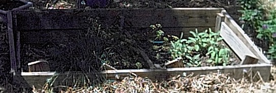
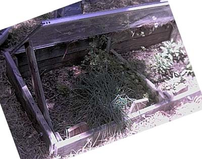

Cold Frame - Large


I have the plans as a PDF and as a PPT. The following instructions should be used in
conjunction with the PDF document. This is built pretty much like the
smaller cold frame but with larger boards.
Before beginning this project please take a look at the following pages. These pages contain things about simple
carpentry I learned. When you are finished you can visit the Main Page:
1) Wood Is Not The Size They say it is
2) The right tools are important, and they really
don't cost that much
3) Technique, a few hints and tricks help make the
job go easier.
The door I used was 78.5" wide by 36". This should be
a "standard" sliding Glass Door.
Page 1 - First cut the bottom level frame, 2 Ea. 81.5" front and 3 Ea. 36.91" side
boards. Butt the back board up
against a step, make sure this is a large flat surface to work on. Put
the two side boards up against the back board, they should be against the ends
of the boards. Put the front board at the front. You should now have a square frame (see
the first page of the document).
Make sure that the box looks square.
If you need help seeing if the box is "square", cut your 13.5 X
1.5 X 3.5" corner posts and put them in the corner. They should be nice and even.
Drill your pilot holes in and screw in the deck screws. I would suggest two
or three screws per board. When you have the front board secured
to the side boards, rotate everything 180 degrees and then attach the back
board to the side boards.
Next take your last 36.91" board and place it in the middle. Carefully measure
to get it exactly in the center. Drill your deck screws
in to secure this board in place.
The corner posts will serve to hold the window up and help stabilize the frame. The glass
window is placed inside the frame without hinges on top of the posts. This allows you to
remove the windows or doors during the summer months. Be sure that the top of the posts
are even with respect to the top of the frame so that when the window rests on the posts the
window is level. Next secure the corner posts.
Please note that the corner posts ought to be flat against the back of the cold
frame. I put them flat against the sides (as you can see in the picture) and I realized I
had made a mistake as soon as I fitted the glass windows in place. I had to shave the
corner posts off with a jigsaw at an angle because the back of the windows were not flush with
the back of the posts when I laid the windows in the frame.
Page 2 and Page 3 - Next cut the top layer. Cut the
back 81.5" board and secure against the side posts. Next cut the
36.91" board. Laying your tape measure, from one
corner of the board to the other draw a diagonal line. Now cut along that line using your jigsaw. You now have two of your side
boards. See page two of the diagram for
cutting these boards and page three for the placement.
Cut the two 8.5" and 9.5" boards. Clamping
the boards to the front, drill a hole (large enough for the bolt and wing nut) through
both boards. Put the wing nut and
a long bolt with one washer against the wing nut and the other washer against
the head of the bolt into the hole you just drilled and gently tighten. These two boards should rotate freely
and they will prop up your windows an inch or two when you want your plants to
get some air, but not so much they get frozen. If the bolt holes are offset correctly then you will get
a couple of inches from one side and three or four inches when you rotate the boards completely around.
Next cut your two 21" boards and attach them just like you just did the previous boards.
A jigsaw is a wonderful tool to have when fitting the windows in place. It is great for cutting the edge of wood
that is keeping the window from fitting down just right. Also, the wood will swell up some as it
sits out in the weather so keep that in mind also.
As always feel free to send me comments (my e-mail address is on the main page).
Main Page